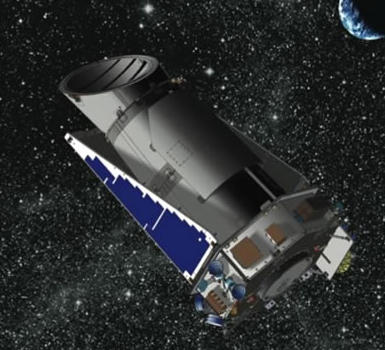
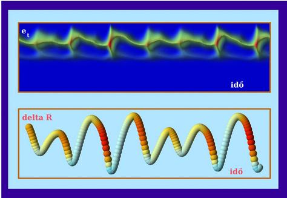
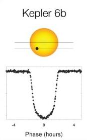

Hallgatói projektek magyarul
Jelentkezés és részletek:
Dr. Szabó Róbert
MTA Konkoly Thege Miklós Csillagászati Kutatóintézet
1121 Budapest, Konkoly Thege Miklós u. 15-17.
email: rszabo kukac konkoly.hu
A világ legpontosabb fotométere: idő-frekvencia és fénygörbe analízis a Kepler-űrtávcsővel
Az exobolygó-kereső NASA-űrtávcsövet 2009. március 7-én bocsátották fel, 2009. május óta pedig több mint 150000 csillag fényességét méri folyamatosan soha nem látott pontossággal. Az MTA KTM kutatói több csillagtípus analízisében vezető szerepet vállalnak. A feladat ehhez kapcsolódva pulzáló változócsillagok Kepler-fénygörbéinek analízise különféle idő-frekvencia módszerekkel. A fantasztikus pontosság és mintavételezés számos asztrofizikai problémát segíthet megoldani, új jelenségek felfedezése is valószínű.
Szükséges: programozás (munka közben is megszerezhető), jó angol nyelvismeret.
Kétmódusú csillagok analízise
Az egyszerre két (vagy több) radiális módusban rezgő változócsillagok jóval több megkötést jelentenek a modellek számára, mint az egyetlen módusban rezgő csillagok. A feladat a közelmúltban felfedezett nagyszámú többmódusú változócsillag (cefeida, RR Lyrae, delta Scuti) adatainak összegyűjtése, rendszerezése, majd vizsgálata és az eredmények összevetése modellszámítások eredményeivel.
Szükséges: programozás (munka közben is megszerezhető), angol nyelvismeret.
A fedési exobolygók története
Az első fedési exobolygót 1999-ben fedezték fel. De mikortól eredeztethetjük pontosan a fedési exobolygók történetét? Valószínűleg sokkal régebbről, mint első pillanatban gondolnánk... A feladat egy történeti áttekintés, kapcsolódással a jelenleg folyó és a jövőben tervezett eszközök és kísérletek felé. A téma számtalan irányban bővíthető.
Szükséges: angol nyelvismeret.